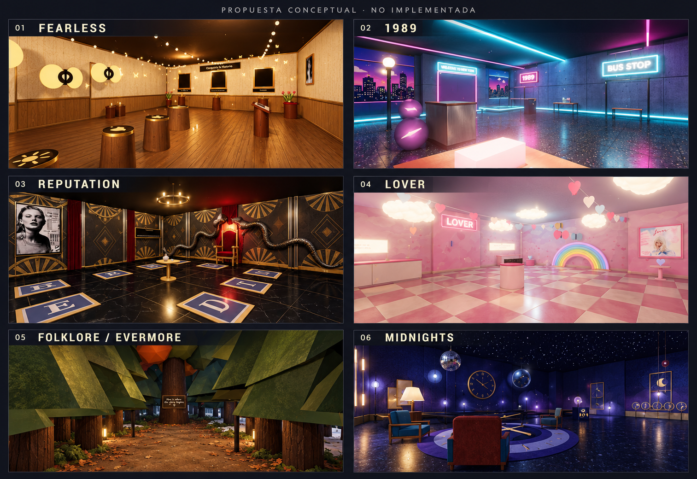
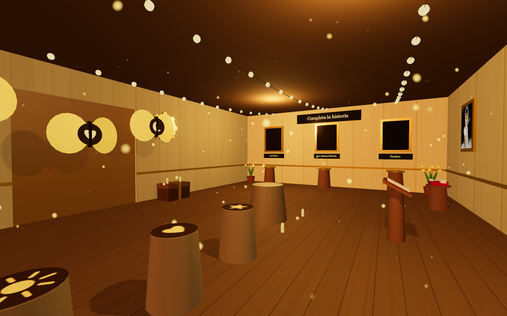
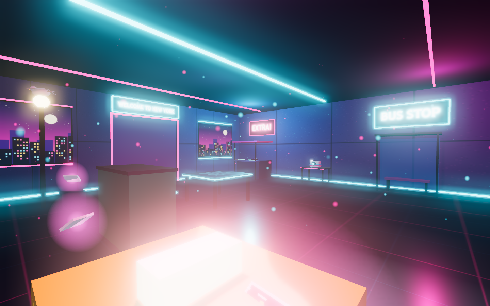
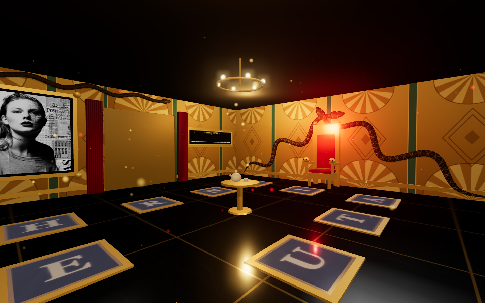
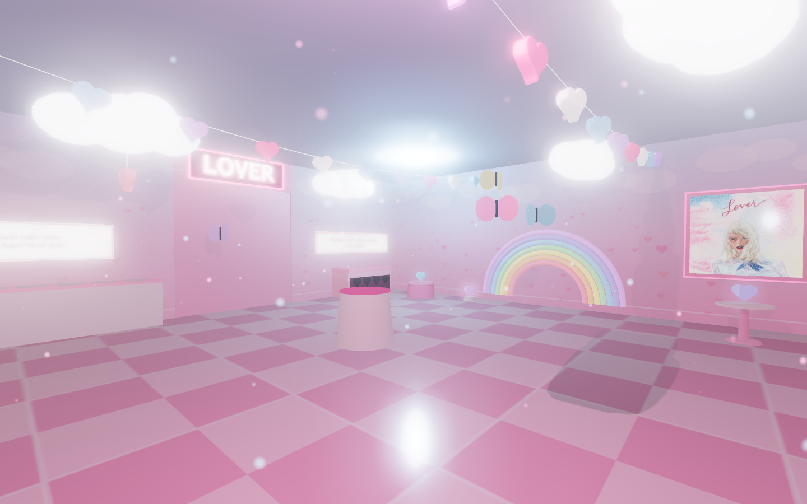
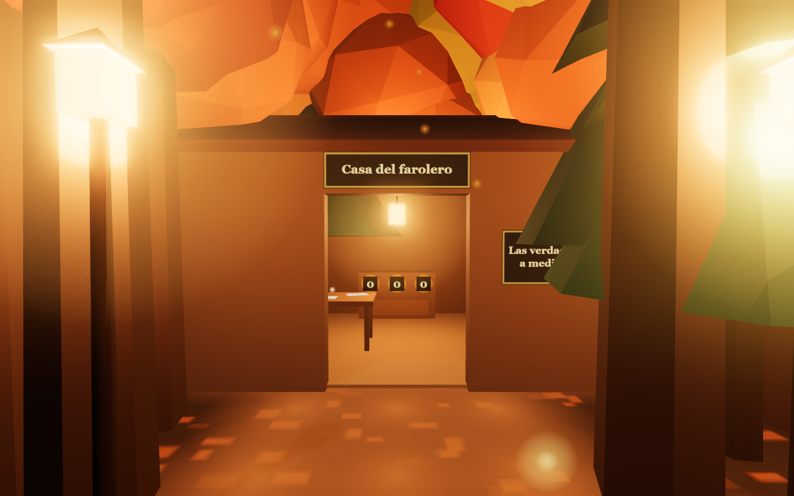
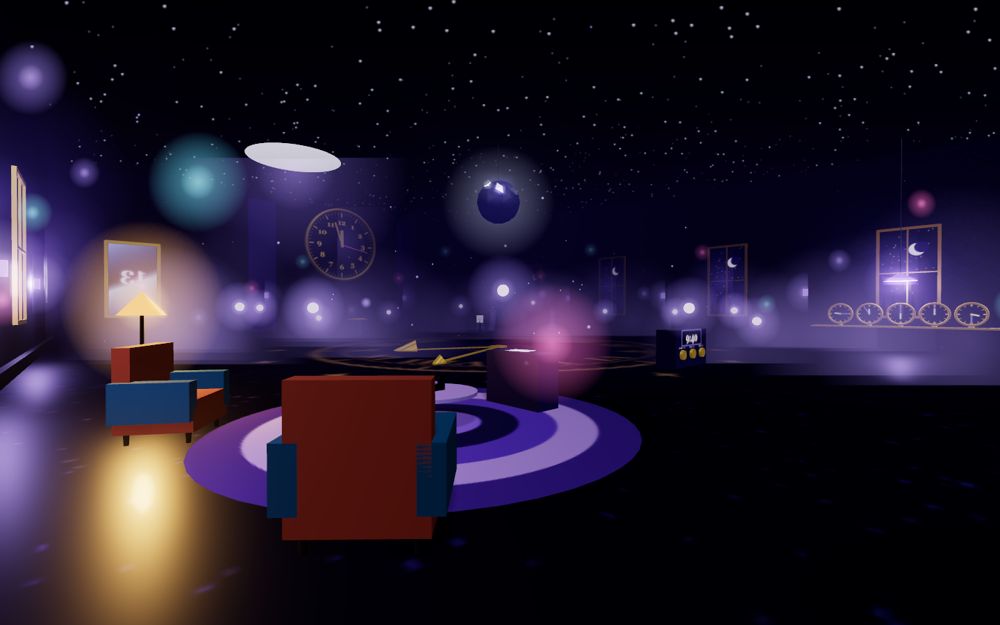

The Eras Escape · 1 noviembre 2026 · propuesta
Seis eras.
Materiales con identidad.
18 capturas nuevas del juego actual, tres vistas por sala. Una propuesta para sumar textura, separar acabados y conservar el carácter de cada era.
Dirección: estilo de cuento, materiales táctiles y desgaste discreto. Conservar distribución y acertijos. Esta entrega no modifica el juego.
Documento completo y criterios de implementación · Lámina del estado actual
Interpretación visual · generada con IA
Dirección de materiales
Propuesta conceptual basada en las capturas reales. No implementada. La imagen interpreta algunos detalles y usa reflejos más intensos que los recomendados para producción; prevalecen los acabados satinados y mates descritos en el informe.

Prompt y método de generación
Sala 01 · Un cuento dorado con materiales cálidos
Fearless
Hoy: Paredes amarillas con líneas verticales, piso de tablas, techo marrón y pedestales casi del mismo tono. La luz y las partículas ya construyen la atmósfera; falta separar los materiales.

Ver entrada y contraplano · capturas actuales
#ead9b8#a47342#b38a43#49301f
Paredes
Lino marfil o papel de fibra fina, conservando la división horizontal. Bajo ella, madera miel de veta suave.
Piso
Roble cálido con tablas reconocibles, variación leve y juntas finas. Acabado mate, sin manchas que parezcan pistas.
Objetos y detalles
Latón cepillado en marcos y remates; madera más oscura en cofres; cuero granate y papel crema en el libro. Discos de símbolos limpios y contrastados.
Conservar
Mariposas, guirnaldas, libro central y posiciones de los tres pedestales.
Prioridad
Piloto recomendado: permite fijar escala de texturas y contraste entre madera, papel y metal.
Sala 02 · Nueva York: esmalte, concreto y neón
1989
Hoy: Paneles azulados, ciudad ilustrada en ventanas, líneas rosa y cian y piso oscuro cuadriculado. El brillo intenso de algunos objetos aplana sus detalles.

Ver entrada y contraplano · capturas actuales
#243544#a5c8d5#ec76ad#d7d8d0
Paredes
Concreto fino azul grisáceo y paneles de esmalte satinado. Mantener los marcos, ventanas y dibujos de ciudad existentes.
Piso
Baldosas de terrazo grafito con grano pequeño y juntas discretas. Reflejos suaves; dejar el brillo más fuerte para el metal y el vidrio.
Objetos y detalles
Acero cepillado en parada y farola; pintura esmaltada en banco y cámara; papel realista en recortes. Neón cian y rosa como acento.
Conservar
Skyline, carteles, parada de bus y piezas de los acertijos.
Prioridad
Segunda pasada: contrastar materiales fríos con la sala cálida de Fearless.
Sala 03 · Salón oscuro de poder y prensa
Reputation
Hoy: Grandes abanicos dorados y franjas verdes dominan las paredes; piso negro con retícula dorada, trono rojo y espejos con letras. Se lee más dorada que oscura.

Ver entrada y contraplano · capturas actuales
#171a1e#a9adb0#a68a49#741f2e
Paredes
Conservar el dibujo art déco, pero convertir el fondo en carbón y los abanicos en dorado viejo de bajo contraste. Filetes de peltre en lugar de verde saturado.
Piso
Piedra negra satinada, veta muy escasa y juntas atenuadas. Los espejos con letras deben destacar sobre la piedra.
Objetos y detalles
Terciopelo vino en trono y cortinas, metal envejecido en estructura, serpientes de plata oscura con escamas finas. Periódicos marfil y negro con textura de tinta.
Conservar
Todos los espejos, letras, estados de acierto/error y superficie del espejo que se rompe.
Prioridad
Mayor cambio de identidad: separar esta sala del dorado de Fearless sin reemplazar su arquitectura.
Sala 04 · Una caja de recuerdos en tonos pastel
Lover
Hoy: Damero rosa y blanco, paredes con corazones, arcoíris y nubes luminosas. El velo blanco y el brillo reducen la lectura de carteles y superficies.

Ver entrada y contraplano · capturas actuales
#e9b7cf#dce7e8#c3b5d9#f0e6d6
Paredes
Papel mate de rosa empolvado y celeste, con nubes de acuarela muy tenues. Reducir la densidad de corazones alrededor de carteles.
Piso
Conservar el damero, con baldosa cerámica satinada en rosa viejo y crema. Pequeña variación entre piezas, juntas cálidas y casi ningún reflejo puntual.
Objetos y detalles
Laca pastel en cofres y pedestales; detalles de nácar moderados. Corazones y arcoíris conservan exactamente sus colores de juego. Túnel con acabado de pintura sedosa.
Conservar
Orden y colores del acertijo, cofres, túnel de corazón, guirnaldas y arcoíris.
Prioridad
Texturas y contraste deben revisarse juntos: el acabado mate por sí solo no resuelve la luz que quema blancos.
Sala 05 · Bosque de cuento, tierra y estaciones
Folklore / Evermore
Hoy: Árboles de geometría facetada, troncos lisos y suelo pintado con manchas amplias. La entrada ya diferencia la tierra cálida y la nieve del lado invernal.

Ver entrada y contraplano · capturas actuales
#354538#826344#c18043#d4e0e7
Paredes
En el perímetro, manchas verticales suaves de bosque oscuro; evitar un patrón de ladrillos o bloques reconocibles. Conservar el cielo y la niebla.
Piso
Mezcla de tierra con hojas al oeste, musgo y tierra en el centro y nieve compactada al este. Bordes difuminados según los senderos existentes.
Objetos y detalles
Corteza vertical poco contrastada sobre troncos, madera de intemperie en la cabaña, hierro oscuro en faroles y hielo azulado en el lago. Mantener copas facetadas.
Conservar
Huellas, musgo que funciona como pista, rutas, cruces, nieblas, lago y símbolos de los faroles. No agregar huellas decorativas.
Prioridad
Primero suelo y troncos. La textura puede mejorar las superficies, pero no elimina la silueta geométrica de las copas.
Sala 06 · Observatorio íntimo de medianoche
Midnights
Hoy: Espacio nocturno amplio con gran reloj inscrito en el piso, cielo estrellado, esfera reflectante y estaciones laterales. La decoración se concentra en azul, violeta y oro.

Ver entrada y contraplano · capturas actuales
#141329#343358#a7a9c1#ba9b55
Paredes
Tejido jacquard azul tinta, con el rombo actual mucho más tenue. Detalles de latón envejecido y cortinas de terciopelo ciruela.
Piso
Piedra azul noche con grano fino, sin añadir vetas que compitan con el gran reloj. Conservar números, marcas y posición del anillo como capa independiente.
Objetos y detalles
Nogal oscuro para escritorio y muebles, tejido visible en alfombra y asientos, metal plateado para esfera y latón en relojes. Brillo selectivo en los objetos de interés.
Conservar
Cielo, reloj del suelo, relojes interactivos, tablero, constelaciones, portal y estados de los acertijos.
Prioridad
Revisión final: que el detalle material aparezca cerca y la lectura del reloj se mantenga desde la entrada.